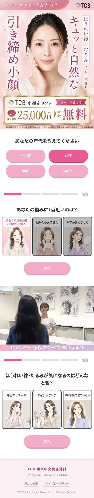
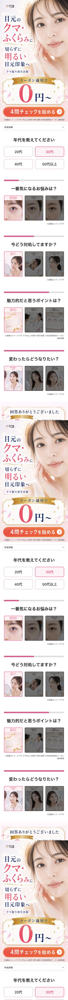

TCBクマ女性AI記事 フィードバック整理
目的: AXISのAI記事担当者にそのまま共有し、Codexが次回以降のフリップアンケ記事生成で同じ不足を出さないための制作ルールに変換する。
結論: 今回のAI記事は、アンケート前半の自己認識導線は作れているが、CTA前後の不安回収と来院後イメージが不足している。
次回からは、結果CTAの前後に 予約手順、ビフォーアフター、選ばれる理由、実績/評価バッジ、当日の施術の流れ を標準パーツとして入れる。目的は、ユーザーが「押した後に何が起きるか分からない」「本当に変われるのか分からない」「来院後が怖い」という状態で離脱するのを防ぐこと。
1. 今回のフィードバックで確定したこと
- 追加する核CTA前に「予約確認手順」の画像を置く。ボタンを押した後の店舗選択、来店日時選択、名前/電話番号入力まで先に見せる。
- 狙いユーザーがCTA後に迷子にならないよう、先に進んでも大丈夫だと思える安心感を作る。
- もっと見る後記事部から提供されるビフォーアフター画像を入れる。悩みと理想を一気に可視化する。
- 理由パート「選ばれる理由」はバッジだけで終わらせず、メリットが伝わる文章として説明する。
- 表現修正「全国100院以上」は次回以降「全国展開」に置き換える。レギュレーション懸念があるため。
- 終盤予約手順画像をもう一度置き、最後に「当日の施術の流れ」を入れて来院後の具体イメージを作る。
現AI記事の不足
- 結果オファー直後にCTAはあるが、その先で何を入力・選択するかの説明がない。
- 教育パートはクマの悩み/治療理解/料金理由まではあるが、実際の予約行動の不安を十分に潰していない。
- ビフォーアフターがなく、悩みから理想への変化が視覚で一気に伝わらない。
- 選ばれる理由が「料金・追加料金・相談」寄りで、施術体験や来院ハードル低下まで広がっていない。
- 当日何が起こるかが見えないため、カウンセリング/施術への怖さが残る。
参考記事から取り入れる核
- CTA直前の予約手順画像で「押した後」を先に見せる。
- ビフォーアフターで、症状と理想の差分を視覚的に理解させる。
- 選ばれる理由を4点ほどに分け、画像と文章で納得材料を出す。
- 実績/評価バッジで「多くの人が選んでいる」感覚を作る。
- 終盤で予約手順と当日の流れを再提示し、行動直前の不安を下げる。
2. 次回以降の標準構成
前半のフリップアンケート後、結果オファーから下はこの順番を標準にする。商材によって一部差し替えるが、この5パーツは省略しない。
回答完了/オファー提示
アンケート回答への報酬として、クーポンや無料カウンセリング枠を見せる。注記は近接配置する。
予約確認手順画像
ページ下のボタンをタップ、店舗/来店日時を選択、名前/電話番号を入力、という流れを画像で見せる。
最初のCTA
手順画像の直後にCTAを置く。CTA単体で押させず、直前に「押した後の安心材料」を置く。
もっと見る後: ビフォーアフター
記事部提供素材を使い、悩みと理想を一気に可視化する。素材がない場合は勝手に捏造せず、素材待ちとして止める。
選ばれる理由
理由を文章で説明する。例: バレにくい、痛み/腫れ/ダウンタイムへの配慮、同意のない追加料金なし、アフターケアなど。
実績/評価バッジ
来院者数、満足度、リピート希望率、アクセスなどを表示。ただし「全国100院以上」は「全国展開」に置換する。
予約確認手順を再掲
終盤CTAの前にも予約手順をもう一度見せる。行動直前の迷いを減らす。
当日の施術の流れ
受付、カウンセリング、施術の流れを画像付きで見せる。来院後の怖さを具体的に下げる。
3. パーツ別の制作ルール
| パーツ | 入れる内容 | 読者心理への役割 | Codexへのルール |
|---|---|---|---|
| 予約手順 | CTAタップ、店舗/来店日時選択、名前/電話番号入力の3ステップ。 | 押した後の不明点をなくし、CTAへの心理的抵抗を下げる。 | 最初のCTA直前と終盤CTA前に入れる。動画でなく画像でも可。 |
| ビフォーアフター | 記事部提供の症例/イメージ素材。症状ごとにBefore/Afterを見せる。 | 「自分の悩みもこう変われるかも」と一瞬で理解させる。 | 素材が来ていない場合は生成で補完しない。素材待ちを明示する。 |
| 選ばれる理由 | 4点程度の理由。施術特性、料金不安、体験不安、通いやすさを分ける。 | メリットを短く整理し、CTA前の不安を論理で潰す。 | 画像だけでなく文章で説明する。商材ごとに理由は作り替える。 |
| 実績バッジ | 来院者数、満足度、リピート希望率、アクセスなど。 | 「多くの人が選んでいる」社会的証明を作る。 | 数値/出典/期間が不明なら未確認扱い。「全国100院以上」は「全国展開」へ。 |
| 当日の流れ | 受付、カウンセリング、施術。必要に応じてアフターケア。 | 来院後の見通しを作り、怖さと面倒さを下げる。 | 全記事で入れる。写真と短い安心コピーをセットにする。 |
4. クマ女性記事に当てはめる場合
5. 参考画面
参考LPと現AI記事をブラウザで確認した証跡。添付画像で示された後半パーツの内容は、上記ルールに文章化して反映済み。


6. Codexへの実装指示として残す文
7. 未確認/素材待ち
- クマ女性用のビフォーアフター画像は記事部提供待ち。未提供ならAI生成で代替しない。
- 予約手順画像内のLP画面は、クマ取り再生注射の実際の遷移先画面に合わせる。
- 「痛み・腫れほぼゼロ」などの強い表現は、公式表現/医療広告チェック後に採用する。
- 満足度、リピート希望率、来院者数などの実績バッジは、出典・期間・注釈を確認してから入れる。
- 「全国100院以上」は使わず、現時点では「全国展開」を標準表現にする。
8. 最終チェックリスト
- 最初のCTA前に予約手順画像があるか。
- CTA後に何を選択/入力するかが、画像だけで分かるか。
- もっと見る後にビフォーアフターがあり、Q1の悩みと対応しているか。
- 選ばれる理由が、画像だけでなく文章でメリット化されているか。
- 実績/評価バッジの数値・注釈・表現は確認済みか。
- 「全国100院以上」ではなく「全国展開」になっているか。
- 終盤に予約手順を再掲しているか。
- 当日の施術の流れで、受付/カウンセリング/施術が見えるか。
- 素材待ちのものをAIが勝手に埋めていないか。